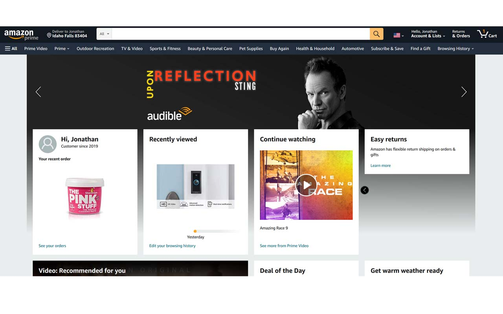
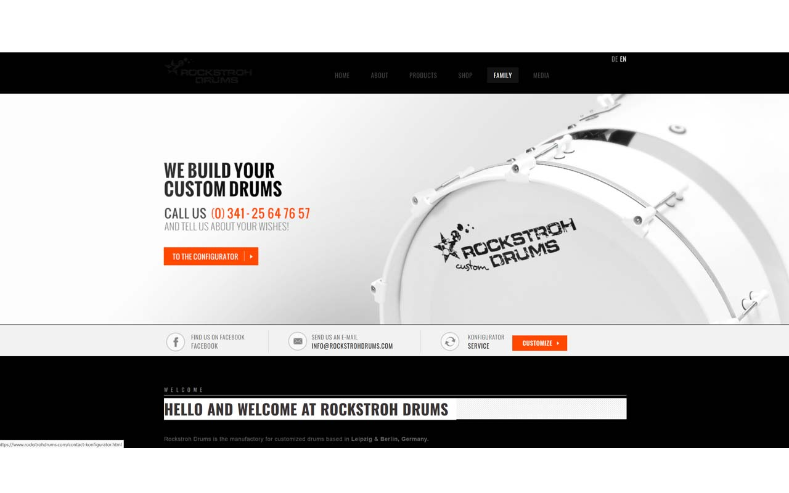
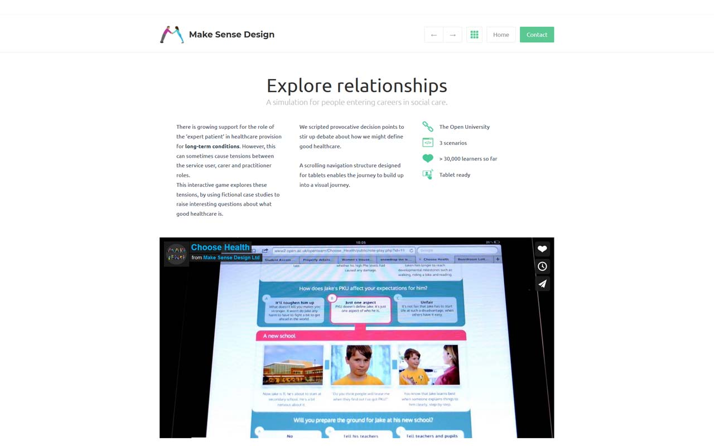

Fitt's Law
Amazon
Amazon does a great job on displaying this principle because almost everywhere in their website directs you to click on items. They make buttons bigger and suggestion windows to navigate thier website with ease and also a way to market items that you may like as well.
Rule of Thirds
Rocktroh Drums
This company used the rule of 3rds very well because according to the rules of 3rds you divide your design into three sections. With this rule you set up focal points according to this rule. I find that they do a great job in drawing your eye to specific points within the website to follow this rule very well.
PARC: Alignment
Make Sense Design

I believe this company displayed this rule very well because they made particular point to make sure everything is aligned and neatly organized. This site is very easy to look at and you can find all the information quickly.